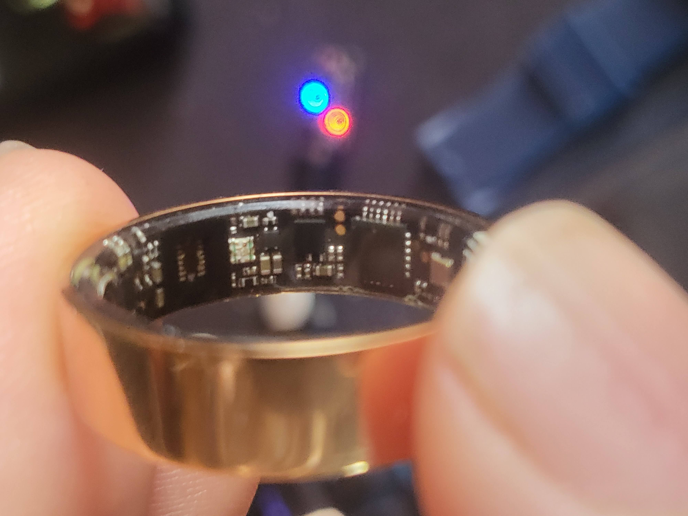

The $10 experiment
The Ti-Vision Smart Fitness Ring is a ~$10 titanium ring that pairs with an ad-laden vendor app and speaks the Gadgetbridge-documented Lefun BLE protocol. The goal: talk to it directly — no cloud, no app, no phone — and see what it can really do.
The answer rewired the whole project.

🔬The headline finding
The listing sells sleep tracking. The app shows steps and "shake for camera." Exhaustive testing proved a single thing that explains all of it:
| Feature | Sensor | Result |
|---|---|---|
| Heart rate | optical PPG | ✔ works |
| SpO₂ | optical PPG | ✔ works |
| Blood pressure (estimate) | optical PPG | ✔ single value |
| Steps · Sleep | accelerometer | ✘ dead — always 0 |
| Shake → camera / find-phone | accelerometer | ✘ dead — never fires |
The pivot: with no shake-button to catch, there's no reason to hold a BLE connection open. Left free to advertise, the ring becomes a room beacon — and that's the foundation for presence lighting.
💡Follow-me lighting
Walk into a room, its lights come on; leave, they go off. Each room's occupancy is fused from up to three independent estimators — whichever resolves the room first wins:
ring advert ─▶ nearest-proxy tracker (custom, recency-weighted) ┐
ring advert ─▶ Bermuda BLE trilateration ├─▶ room ─▶ that room's
mmWave ─▶ ESPHome radar presence (instant, identity-blind) ┘ occupancy button_lights
(OR-fused)🔵 BLE — knows who
Two independent estimators on the ring's adverts (a custom nearest-proxy tracker + Bermuda). Identity-aware, whole-house, but slow — a cheap ring advertises sparsely and can't wake on motion.
📡 mmWave — knows now
Instant, holds while you sit still, but identity-blind. Plug a radar into a room and it upgrades to sub-second response automatically — zero config change.
🩹 Self-healing
Each room manages itself; lights fire on the occupancy rising edge only. A manually-darkened room stays dark; a room left lit by a missed transition is cleaned up on the next event.
🛡️ Graceful degradation
Radar down → BLE carries it. One tracker glitches → the other covers. Ring out of range → the room simply clears. No single point of failure.
Room tracking rides on ESPHome Bluetooth proxies — one per tracked room, standard and well-documented Home Assistant territory. This house runs ESP32-C3 devkits that triple-duty as advert proxies, iTag button holders, and BLE battery-monitor bridges.
🧩What's in the repo
lefun_ring.py | Standalone Python CLI + library for the ring's native BLE protocol. No HA needed. |
custom_components/lefun_ring/ | Home Assistant integration — routes through HA Bluetooth (local adapter or ESPHome proxies), sensors + services + real-time room tracking. |
ha-packages/lefun_ring.yaml | The presence-lighting engine: fused occupancy, follow-me automation, per-room toggles, finder scripts. |
dashboard/ | Lovelace dashboards for the ring and the BLE-proxy fleet. |
⚡Quick start
python3 -m venv .venv && .venv/bin/pip install -r requirements.txt # one-time bond, then read live data bluetoothctl pair <RING_MAC> && bluetoothctl trust <RING_MAC> .venv/bin/python lefun_ring.py --address <RING_MAC> hr
For Home Assistant: copy custom_components/lefun_ring/ into your
config, restart, and add the Lefun Ring integration —
full instructions →